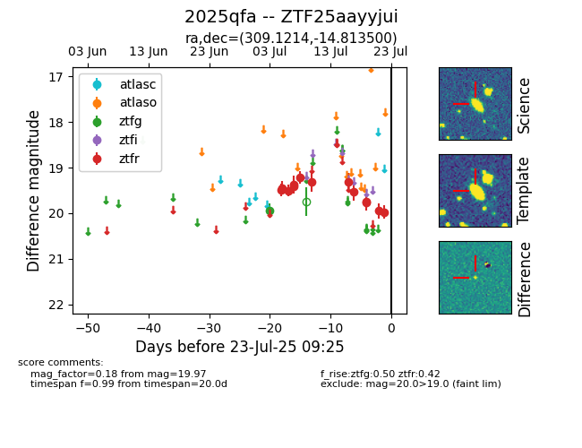

Target ZTF25aayyjui at 2025-07-23 12:37, see:
FINK: fink-portal.org/ZTF25aayyjui
Lasair: lasair-ztf.lsst.ac.uk/objects/ZTF25aayyjui
ALeRCE: alerce.online/object/ZTF25aayyjui
TNS: wis-tns.org/object/2025qfa
YSE: ziggy.ucolick.org/yse/transient_detail/2025qfa
alt names
ZTF25aayyjui (ztf,fink)
2025qfa (tns,yse)
coordinates:
equatorial (ra, dec) = (309.1214,-14.81350)
galactic (l, b) = (30.7857,-29.82104)
photometry
last ztfg=19.94, ztfr=19.97
1 ztfg, 13 ztfr detections
